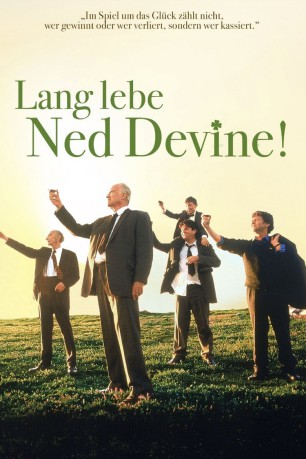

#3514 Lang lebe Ned Devine!
Alternativ: Waking Ned Devine (Englischer Titel)
 gesehen am 22.04.2016
gesehen am 22.04.2016
 
 IMDB-Wertung: 7.4 / 10
IMDB-Wertung: 7.4 / 10  Metascore: 0
Metascore: 0 
Jackie O'Shea träumt seit Jahren vom großen Lottogewinn. Doch das Schicksal ist ihm nicht gewogen. Nicht nur, daß es das Glück stets an ihm vorbeiziehen läßt, es erwählt auch noch jemanden aus Jackies unmittelbarer Nachbarschaft - einen der restlichen 51 Einwohner seines Heimatdorfes Tullymore. Doch wer ist es? Jackie und sein Kumpel Michael beginnen sofort mit ihren Nachforschungen. Bald wissen sie, wer der Glückliche ist: Ned Devine. Dumm nur, daß der alte Ned vor lauter Freude über seinen Gewinn einem Herzschlag erlegen ist...
Jahr: 1998
Dauer: 91 Minuten
FSK: 6
Land: England Studio: Waking Ned DevineTonspuren:
Untertitel: Deutsch,
Auflösung: 1080p (1920x816) Größe: 3891 MB
Genre: Komödie
Regisseur: Kirk Jones
Drehbuch: John Gay
Soundtrack:
Darsteller:
 Ian Bannen als Jackie O'Shea
Ian Bannen als Jackie O'Shea David Kelly als Michael O'Sullivan
David Kelly als Michael O'Sullivan Fionnula Flanagan als Annie O'Shea
Fionnula Flanagan als Annie O'Shea Susan Lynch als Maggie O'Toole
Susan Lynch als Maggie O'Toole James Nesbitt als Pig Finn
James Nesbitt als Pig Finn- Fintan McKeown als Pat Mulligan
- Paul Vaughan als Narrator
- Adrian Robinson als Lotto Observer
- Maura O'Malley als Mrs. Kennedy
- Robert Hickey als Maurice O'Toole
- Paddy Ward als Brendy O'Toole
- James Ryland als Dennis Fitzgerald
- Eileen Dromey als Lizzy Quinn
- Kitty Fitzgerald als Kitty
- Dermot Kerrigan als Father Patrick
- Jimmy Keogh als Ned Devine
- Brendan Dempsey als Jim Kelly
- Matthew Devitt als Tom Toomey
- Rennie Campbell als Rennie
- Eamonn Doyle als Dicey Riley
- Raymond MacCormac als The Whistler
- Larry Randall als Father Mulligan
- Jim Ashford als Villager of Tullymore
 Anne Bancroft als Villager of Tullymore
Anne Bancroft als Villager of Tullymore- Lewis Charles Barham als Villager of Tullymore
- Colin Bendall als Villager of Tullymore
- Dodo Bickerdike als Villager of Tullymore
- Joy Birnie als Villager of Tullymore
- James Bishop als Villager of Tullymore
- Peter Bradford als Villager of Tullymore
- Steven Burke als Villager of Tullymore
- Derick Bussey als Villager of Tullymore
- Norman Cain als Villager of Tullymore
- Margaret Cain als Villager of Tullymore
- Peter Carroll als Villager of Tullymore
- Barbara Clague als Villager of Tullymore
- Pam Courtenay Smith als Villager of Tullymore
- Edwina Crebbin als Villager of Tullymore
- Jill Cruddace als Villager of Tullymore
- Ted Cruddace als Villager of Tullymore
- Heather Dawes als Villager of Tullymore
- George Egee als Villager of Tullymore
- Jill Foster als Villager of Tullymore
- Susan Hidson als Villager of Tullymore
- Margaret Horsfield als Villager of Tullymore
- John Kaighin als Villager of Tullymore
- Stanley Karran als Villager of Tullymore
- Una King als Villager of Tullymore
- Anne Lace als Villager of Tullymore
- Shirley Lewney als Villager of Tullymore
Datei: X:\1998\Lang lebe Ned Devine! (1998, FSK6, 1920x816).mkv seit 21.04.2016
Festplatte: HD 1996-2002
 Es gibt insgesamt 86 Filme in der Gruppe '1998'
Es gibt insgesamt 86 Filme in der Gruppe '1998'